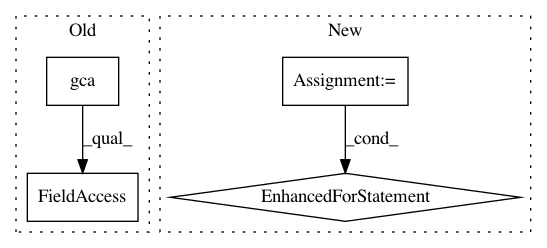

6d87b5fa03420a908fbf7e72868307dd6bc3223f,intro/matplotlib/examples/plot_bar.py,,,#,11
Before Change
width=.66, height=.165, clip_on=False,
boxstyle="square,pad=0", zorder=3,
facecolor="white", alpha=1.0,
transform=plt.gca().transAxes))
plt.text(-0.05, 1.02, " Bar Plot: plt.bar(...)\n",
horizontalalignment="left",
After Change
for x, y in zip(X, Y1):
plt.text(x + 0.4, y + 0.05, "%.2f" % y, ha="center", va= "bottom")
for x, y in zip(X, Y2):
plt.text(x + 0.4, -y - 0.05, "%.2f" % y, ha="center", va= "top")
plt.xlim(-.5, n)
plt.xticks(())
plt.ylim(-1.25, 1.25)
plt.yticks(())
In pattern: SUPERPATTERN
Frequency: 3
Non-data size: 4
Instances
Project Name: scipy-lectures/scipy-lecture-notes
Commit Name: 6d87b5fa03420a908fbf7e72868307dd6bc3223f
Time: 2016-09-15
Author: gael.varoquaux@normalesup.org
File Name: intro/matplotlib/examples/plot_bar.py
Class Name:
Method Name:
Project Name: nilmtk/nilmtk
Commit Name: 0ac7cecce4f147011037fcb79dfd57867b8329a8
Time: 2014-12-19
Author: jack-list@xlk.org.uk
File Name: nilmtk/metergroup.py
Class Name: MeterGroup
Method Name: plot_good_sections
Project Name: has2k1/plotnine
Commit Name: 6ef3e2d6e871b82774f8bd8d23c27cf809c990eb
Time: 2014-02-02
Author: jasc@gmx.net
File Name: ggplot/ggplot.py
Class Name: ggplot
Method Name: draw